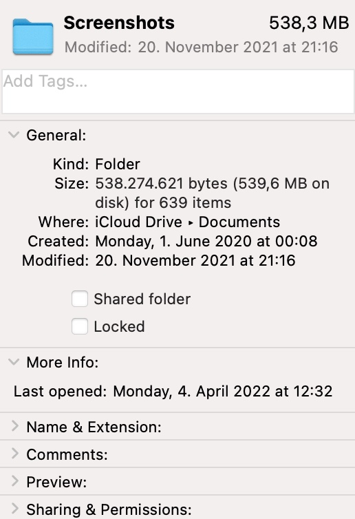
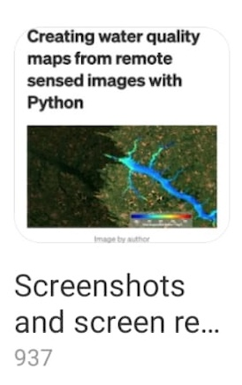

Generally, I work on Deep Learning Models and Robotic Projects.
I work on SSinvader project. It is just for fun and to tease myself.
I have 639 screenshots on my computer and 937 screenshots on my phone.
I am taking them to check later.
I can not delete because there can be important information.
 is destroy my screenshots.
I code with Python.
For that, I will use Image Augmentation Library. You can check on Github. .
I will use different augmentation types and augmentation rates as seen in the video.
You have same size of folder.
Follow this repository.